Main page
Characters
Galery
Feedback
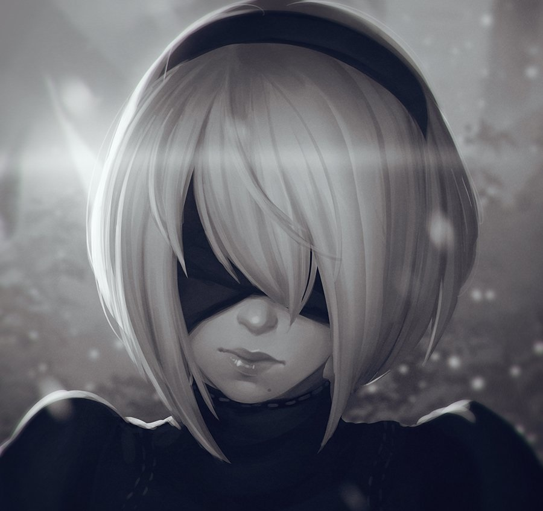
More...
2B
Female model android created by humans who fled to the Moon to avoid extinction by the Machines. The first playable character and protagonist of Branch A.
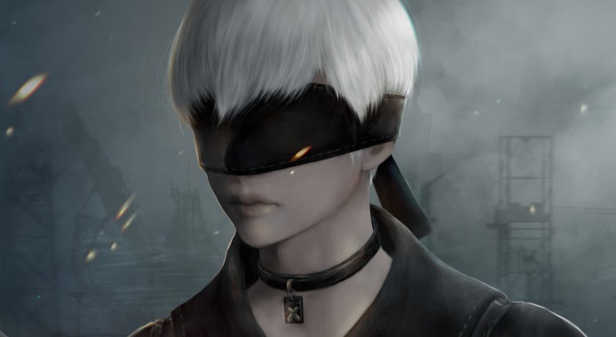
More...
9S
Scanner male type android who is best served when hacking, however he is still able to keep up with other close-range attackers. He has a very gentle and kind personality. The second playable character and protagonist of Branches B and D.
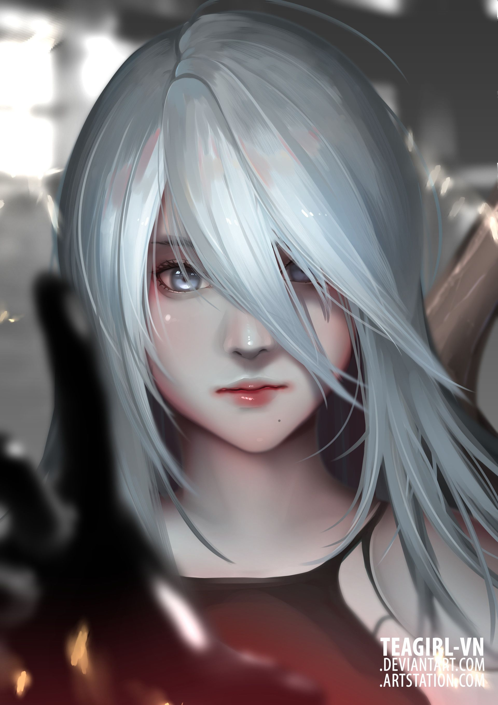
More...
A2
A prototype model that was used in order to create superior android models like 2B and 9S. She doesn't like to speak and often keeps to herself. The final playable character and protagonist of Branch C.
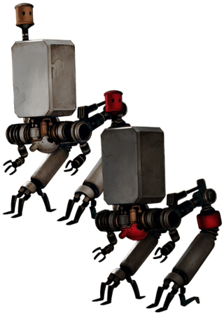
More...
Pod 042 & Pod 153
Accompanying support units of YoRHa. They provide support with long-ranged attacks, analysis of situations, enemies, etc. and mobility. Their names are read as "Pod zero-four-two" and "Pod one-five-three".
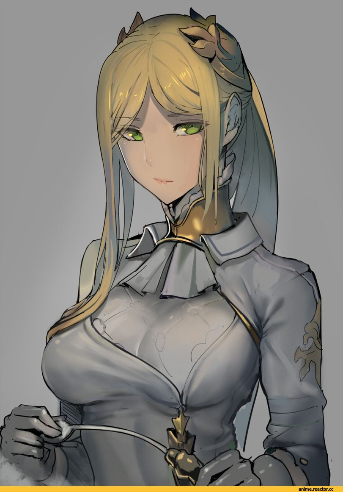
More...
YoRHa Commander
The calm and composed commander of the YoRHa units and director of the orbital satellite known as the “Bunker”. There is some connection between her and A2.
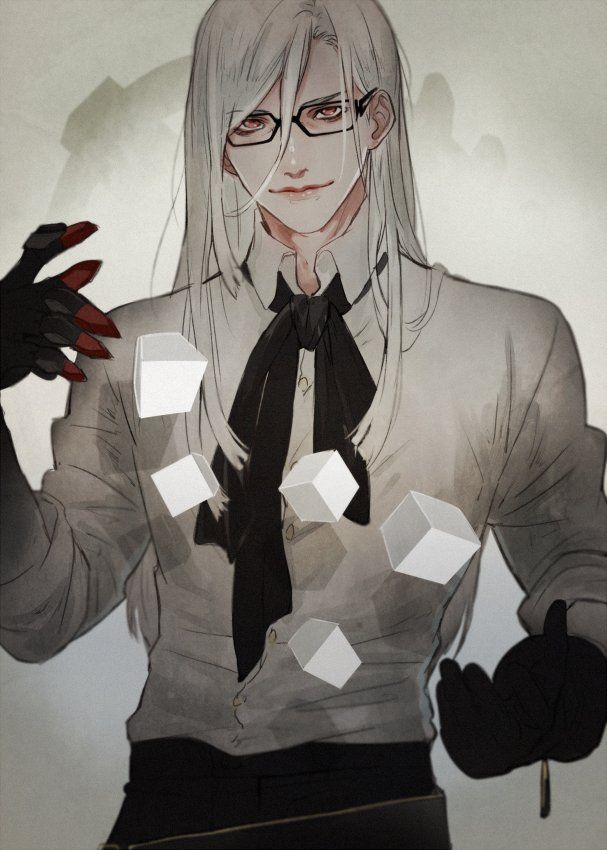
More...
Adam
A silver-haired young man whose identity is shrouded in mystery. He has a cool-headed temperament but can take merciless action for the sake of his objective.
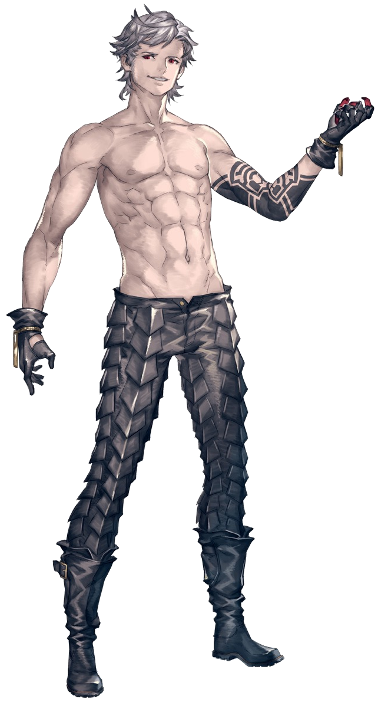
More...
Eve
Adam’s younger twin brother. He’s more simple-minded and doesn’t put much deep thought into things.
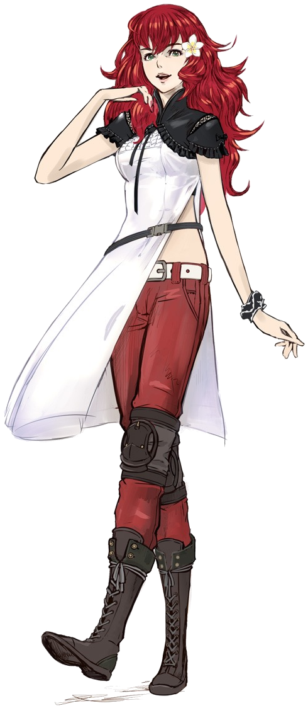
More...
Devola
Old-model android who reside in the Resistance camp. She feel a great sense of responsibility for the mistakes made by their sister models in the past. She act as support for 2B and 9S.
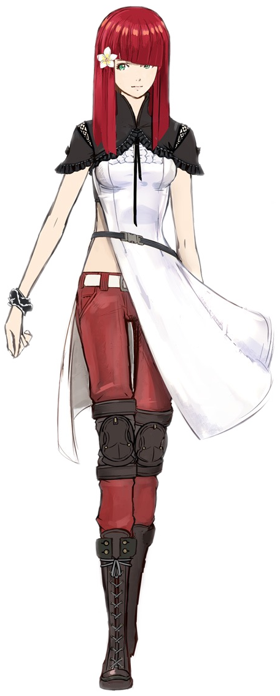
More...
Popola
Old-model android who reside in the Resistance camp. She feel a great sense of responsibility for the mistakes made by their sister models in the past. She act as support for 2B and 9S.
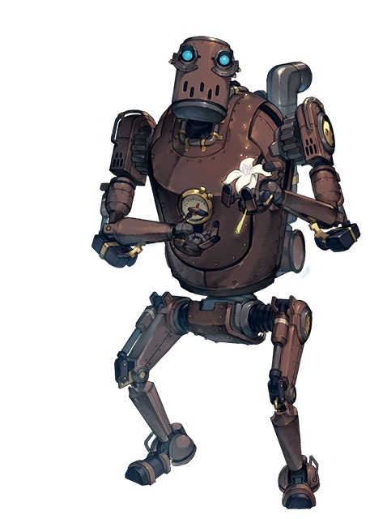
More...
Pascal
In spite of being a Bio-machine, Pascal is a pacifist. He is highly intelligent and has an interest in the history of both humans and Bio-machine.
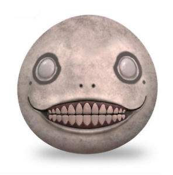
More...
Emil
A character who traveled with Nier in the previous game. While he has high magical power deep inside him, he has lost a significant portion of his memory over the long years.
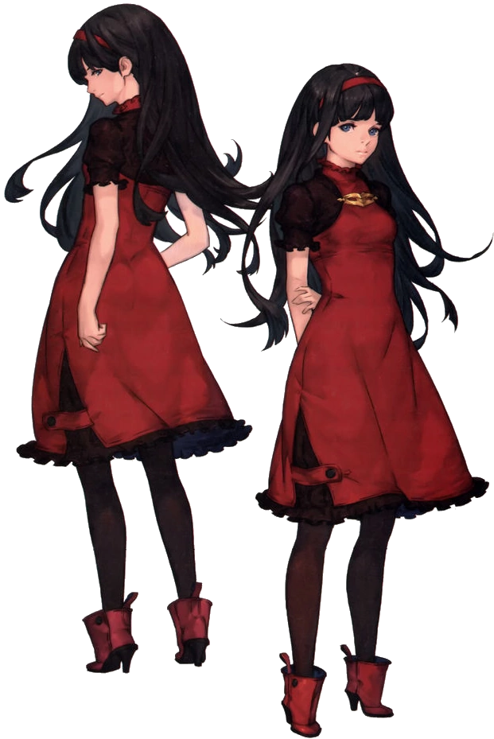
More...